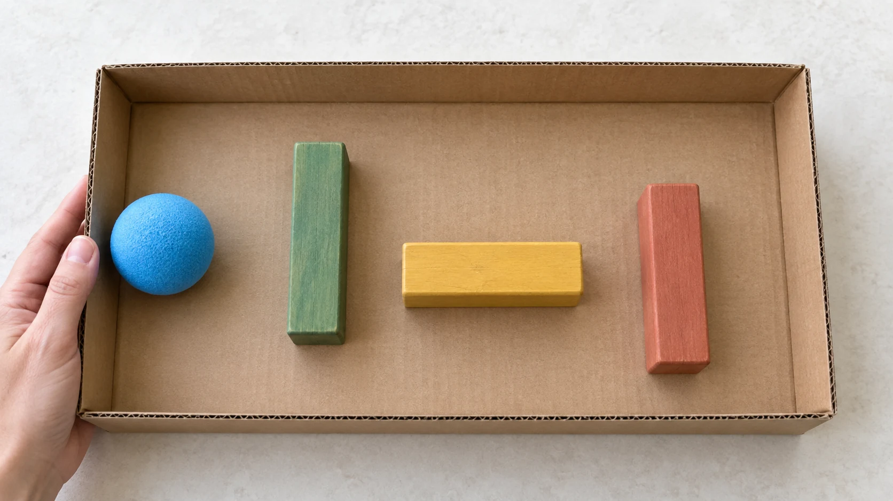

Build - roll - change
Cardboard Ball Maze for Kids
Can you guide one big ball through three movable walls? Start with a wide path, tilt gently, then change one wall.
Fit and start
Try it when: your child can move a chunky block and follow a stop cue. An adult can steady or tilt the lid if two-handed control is still difficult.
Get: one shallow intact box lid, three chunky blocks, and one large lightweight foam ball chosen by the adult for every child who can reach the setup.
- Adult: put the lid flat in a clear floor or low-table space and keep control of the ball between runs.
- Child: place three blocks as wide walls, then hold two sides and tilt gently to guide the ball through.
Mission: move the ball from one end of the lid to the other without lifting it by hand.
Stop: if the ball or a block goes in a mouth, is thrown, or leaves the clear area; if the lid is lifted near a face or shaken hard; or if cardboard or a block becomes damaged.

Make one wide path
- Put the empty lid flat. Check that it is intact, shallow, and easy for the child to hold at two sides.
- Place three chunky blocks flat inside as loose walls. Leave gaps much wider than the ball.
- The adult puts the large lightweight ball at one end, then moves both hands outside the rolling area.
- Hold two sides of the lid and tilt only enough to make the ball roll. Guide it around the walls to the other end.
- Put the lid flat. The adult takes control of the ball before the next run or cleanup.
Change one wall
Keep the same lid, ball, starting side, and two walls. Move only the third wall, then run the maze again. The visible comparison is the route the ball takes; no learning or engagement outcome is assumed.
First route
Keep all three walls far apart. Make one calm run from start to finish.
One change
Turn or move one wall while the lid is flat. Try the same starting side again.
Parent phrase: "Which wall should we move?" If the child wants to rearrange everything, let the comparison end and use the blocks for open maze building.
If the maze is not working
- The ball gets stuck
- Put the lid flat. Move one wall farther away, then restart from the same end.
- The path is too hard
- Remove one wall or line up all three as a simple zigzag with very wide gaps.
- The blocks slide too much
- Use wider, flatter blocks and gentler tilts. Loose walls are meant to move; do not add tape or glue.
- The lid tips or bends
- Stop. Use a smaller intact lid, keep it on the floor, or let the adult tilt while the child directs the route.
- The child is done
- Put the lid flat, let the adult remove the ball, and end the activity. Completing another run is optional.
Change the role, not the promise
With a younger child nearby
The adult keeps the ball and spare blocks out of reach between runs. Use only pieces selected for every child who can reach the setup, and end the activity if mouthing or throwing begins.
If tilting is difficult
Keep the lid on a low surface. The child can place or point to walls while the adult makes the gentle tilt. This changes the motor role, not the maze mission.
Specific sensory preferences, mobility needs, and assistive-technology requirements were not established by this research. Adjust sound, touch, posture, and participation with the child in front of you rather than treating the age label as a complete fit decision.
Reset and clean up
Put the lid flat. The adult removes and stores the ball first. Return the blocks, inspect the lid for torn or bent edges, and recycle it if it is damaged. Check the floor before a younger child returns.
What this guide knows
Kid Activity Lab built this guide from current public activity references and editorial synthesis. Kid Activity Lab has not recorded a family test of this setup. Exact duration, mess, comprehension, engagement, enjoyment, learning, repeatability, frustration, and safety outcomes are unknown.
PBS, KID Museum, Children's Home Society of California, and the Children's Museum of Southern Minnesota each document a box or tray maze with a rolling ball. Several source versions use fixed walls, craft tools, or small balls. The intact lid, loose chunky blocks, large lightweight ball, and three-wall default on this page are Kid Activity Lab's research-backed editorial variant, not a tested source outcome.